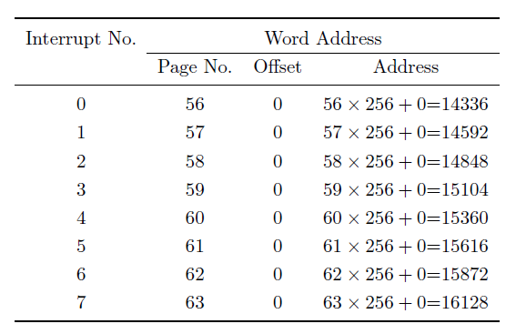
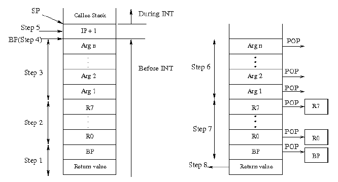

Interrupts are mechanisms by which the user code interrupts the execution of the processor and passes control to the kernel to accomplish low level functionalities like disk access, arithmetic exception handling etc.
Interrupt Service Routine(ISR): The kernel provides routines to accomplish the functionality for which an interrupt has been generated. These routines are known as Interrupt Service Routines.
The instruction used to generate an interrupt is INT.
The INT instruction passes control to the Interrupt Service Routine (ISR) for this interrupt located at the physical address computed using the value n.
Address computation is done as follows. The physical address of the ISR corresponding to interrupt number n is given by:
Figure~\ref{interrupt table} summarises the physical address to which the control is transferred for each interrupt. Note that the interrupts are disabled once this instruction is executed, since we do not allow interrupts to occur in kernel mode.
There are 8 interrupts (numbered from 0 to 7) supported by the ESIM architecture. The interrupts 0 is a hardware interrupts and the remaining interrupts (1 to 7) are software interrupts.
Details of the hardware interrupt is as follows.
Details of \emph{software interrupts} are as follows.
In this section, we explain the calling and returning conventions for interrupts.
Before switching the control to the ISR using the INT instruction the user program does the following:
The INT instruction pushes the IP+1 value on to the stack and then starts the execution of the corresponding ISR. When the ISR finishes its execution, IRET instruction is called. This IRET instruction pops the IP+1 value from the stack top into the IP register and the execution of the user program is resumed from the point where it was interrupted.
After returning from the ISR using the IRET instruction the user program does the following:
Figure~\ref{fig:calling_convention} explains the state of the stack at various stages.
